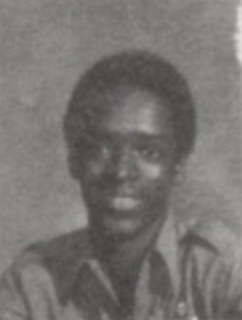

Jeffrey Dahmer killed seventeen young men between 1978 and 1991. Twelve were killed in his North 25th Street apartment. Three victims were murdered and dismembered at his grandmother's West Allis residence. His first and second victims were murdered at his parents' home in Ohio and at the Ambassador Hotel in Milwaukee, respectively. A total of fourteen of Dahmer's victims were from various ethnic minority backgrounds, with nine victims being black. Dahmer was adamant that the race of his victims was incidental to him and that it was the body form of a potential victim that attracted his attention.These contentions have been supported via an independent forensic specialists' study of Dahmer's victim selection, the anthropological analysis of which revealed his victims shared a "morphological similarity" and suggesting Dahmer was "psychologically attracted to a certain anthropometric body type".
Most of Dahmer's victims were killed by strangulation after being drugged with sedatives. His first victim was killed by a combination of bludgeoning and strangulation and his second victim was battered to death, with one further victim killed in 1990, Ernest Miller, dying of a combination of shock and blood loss due to his carotid artery being cut. Four of Dahmer's victims killed in 1991 had holes bored into their skulls through which Dahmer injected hydrochloric acid or, later, boiling water, into their frontal lobesin an attempt to induce a permanent, submissive, unresistant state. This proved fatal, although on each occasion this was not Dahmer's intention.
June 18: Steven Mark Hicks 18: Last seen hitchhiking to a rock concert in Chippewa Lake Park in Bath, Ohio. By Dahmer's admission, Hicks caught his attention because he was bare-chested. Dahmer bludgeoned him with a dumbbell and strangled him to death with this instrument before he dismembered the corpse. He then pulverized Hicks' bones with a hammer and scattered them in woodland behind the Dahmer family home.
Steven Walter Tuomi November 20: Steven Walter Tuomi, 25. Killed in a rented room at the Ambassador Hotel in Milwaukee. Dahmer claimed to have no memory of murdering Tuomi, yet stated he must have battered him to death in a drunken stupor. His body was dismembered in the basement of Dahmer's grandmother's house and the remains discarded in the trash. No remains were ever found.
January 16: James Edward Doxtator, 14:Dahmer met him outside a gay bar in Wisconsin and lured him to West Allis on the pretext of paying him $50 to pose for nude pictures. Dahmer strangled Doxtator and kept his body in the basement for a week before dismembering him and discarding the remains in the trash.
March 24: Richard Guerrero, 22. Drugged and strangled in Dahmer's bedroom at West Allis. Dahmer dismembered Guerrero's corpse in the basement, dissolved the flesh in acid and disposed of the bones in the trash. He bleached and retained the skull for several months before disposing of it. No remains were ever found.
March 25: Anthony Lee Sears, 24. Sears was the last victim whom Dahmer drugged and strangled at his grandmother's residence; he was also the first victim from whom Dahmer permanently retained any body parts. His preserved skull and genitals were found in a filing cabinet at 924 North 25th Street following Dahmer's arrest in 1991.
May 20: Raymond Lamont Smith (also known as Ricky Beeks), 32. The first victim to be killed at Dahmer's North 25th Street apartment. Smith was a male sex worker whom Dahmer encountered at a tavern. Dahmer gave Smith a drink laced with sleeping pills, then strangled him on his kitchen floor.His skull was spray-painted and retained.
June 14: Edward Warren Smith, 27. A known acquaintance of Dahmer who was last seen in his company at a party. Dahmer acidified Smith's skeleton; his skull was destroyed unintentionally when placed in the oven in an effort to remove moisture. No remains were ever found.
September 2: Ernest Marquez Miller, 22. Miller was a dance student whom Dahmer encountered outside a bookstore. According to Dahmer, he was especially attracted to Miller's physique. He was killed by having his carotid artery severed before being dismembered in the bathtub, with Dahmer storing his entire skeleton in the bottom drawer of a filing cabinet and his heart, liver, biceps, and portions of his thighs in the freezer for later consumption.
September 24: David Courtney Thomas, 22. Encountered Dahmer near the Grand Avenue Mall; he was lured to Dahmer's apartment on the promise of money for posing nude. Once a laced drink had rendered Thomas unconscious, Dahmer decided he "wasn't my type". Nonetheless, Dahmer strangled Thomas, taking Polaroid photos of the dismemberment process. No remains were ever found.
February 18: Curtis Durrell Straughter, 17. Approached by Dahmer as he waited at a bus stop near Marquette University. Dahmer lured Straughter to his apartment, where he drugged, handcuffed and strangled him before dismembering his body in the bathtub. He retained Straughter's skull, hands, and genitals.
April 7: Errol Lindsey, 19. The first victim upon whom Dahmer practiced what he later described to investigators as his "drilling technique", a procedure in which he drilled holes into the victim's skull, through which he injected hydrochloric acid into the brain. According to Dahmer, Lindsey awoke after this practice, after which he was again rendered unconscious with a drink laced with sedatives, then strangled to death. Dahmer flayed Lindsey's body and retained the skin for several weeks. His skull was found following Dahmer's arrest.
Tony Anthony Hughes May 24: Tony Anthony Hughes, 31. Hughes was lured by Dahmer to his apartment upon the promise of posing nude for photographs. As Hughes was deaf, he and Dahmer communicated using handwritten notes. The injection of hydrochloric acid into Hughes's skull proved fatal. His body was left on Dahmer's bedroom floor for three days before being dismembered, with Dahmer photographing the dismemberment process. His skull was retained and identified from dental records.
May 27: Konerak Sinthasomphone, 14. The younger brother of the boy Dahmer had molested in 1988. Dahmer drugged Sinthasomphone and injected hydrochloric acid into his brain before leaving him unattended as he left the apartment to purchase beer. When he returned, he discovered Sinthasomphone naked and disoriented in the street, with three distressed young women attempting to assist him. When police arrived, Dahmer persuaded them he and Sinthasomphone were lovers and that Sinthasomphone was simply intoxicated. When police left Sinthasomphone with Dahmer in his apartment, Dahmer again injected hydrochloric acid into Sinthasomphone's brain, and this proved fatal. He kept Sinthasomphone's head in the freezer and dismembered his body.
June 30: Matt Cleveland Turner, 20. On June 30, Dahmer attended the Chicago Pride Parade. At a bus stop, he encountered a 20-year-old named Matt Turner and persuaded him to accompany him to Milwaukee to pose for a photo shoot. Turner was drugged, strangled, and then dismembered in the bathtub. His head and internal organs were put in the freezer and his torso subsequently placed in the 57-gallon drum Dahmer purchased on July 12.
July 5: Jeremiah Benjamin Weinberger, 23. Dahmer met him at a gay bar in Chicago and persuaded him to accompany him to Milwaukee for the weekend. Dahmer drilled through Weinberger's skull and injected boiling water into the cavity. He later recalled Weinberger's death to be exceptional, as he was the only victim who died with his eyes open. He kept Weinberger's decapitated body in the bathtub for a week before dismembered; his torso was placed in the 57-gallon drum.
July 15: Oliver Joseph Lacy, 24. A bodybuilding enthusiast whom Dahmer enticed to his apartment with the promise of money for posing for photographs. Lacy was drugged and strangled with a leather strap before being decapitated, with his head and heart being placed in the refrigerator. His skeleton was retained to adorn one side of the private shrine of skulls and skeletons Dahmer was in the process of creating when arrested one week later.
July 19: Joseph Arthur Bradehoft, 25. Dahmer's last victim. Bradehoft was a father of three children from Minnesota who was looking for work in Milwaukee at the time of his murder. Dahmer left Bradehoft's body on his bed for two days before, on July 21, decapitating it. Dahmer placed Bradehoft's head in the refrigerator, and his torso in the 57-gallon drum.
© 2025 Dre's first. All rights reserved.